Inhalt Index DeskTop Bronstein

 Dynamische Systeme und Chaos Gewöhnliche Differentialgleichungen und Abbildungen Qualitative Theorie gewöhnlicher Differentialgleichungen Stabilitätstheorie
Dynamische Systeme und Chaos Gewöhnliche Differentialgleichungen und Abbildungen Qualitative Theorie gewöhnlicher Differentialgleichungen Stabilitätstheorie


Eine Differentialgleichung (17.1) kann einen m-dimensionalen Torus als invariante Menge besitzen. Ein in den Phasenraum  eingebetteter m-dimensionaler Torus Tm wird durch eine differenzierbare Abbildung 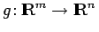, die als Funktion 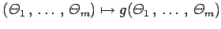 in jeder Koordinate 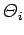 als
eingebetteter m-dimensionaler Torus Tm wird durch eine differenzierbare Abbildung 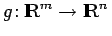, die als Funktion 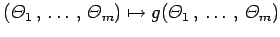 in jeder Koordinate 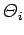 als  -periodisch vorausgesetzt wird, definiert.
-periodisch vorausgesetzt wird, definiert.
| Beispiel |
|
In einfachen Fällen läßt sich die Bewegung des Systems (17.1) auf dem Torus in Winkelkoordinaten durch die Differentialgleichungen 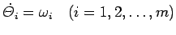 beschreiben. Die Lösung dieses Systems mit Anfang 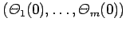 zur Zeit t = 0 ist 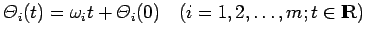. |
Eine stetige Funktion 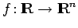 heißt quasiperiodisch, wenn f eine Darstellung in der Form 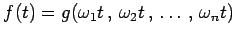, wobei g wieder wie oben eine differenzierbare Funktion, die  -periodisch in jeder Komponente ist, besitzt und die Frequenzen 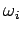 inkommensurabel sind, d.h. es keine ganzen Zahlen ni mit 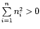 gibt, so daß 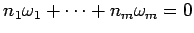 ist.
-periodisch in jeder Komponente ist, besitzt und die Frequenzen 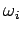 inkommensurabel sind, d.h. es keine ganzen Zahlen ni mit 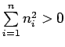 gibt, so daß 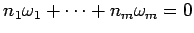 ist.